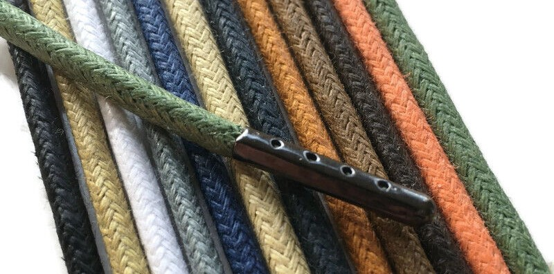

Slides from a tutorial on mixed-effects models I presented to my research group.
Using the Levenshtein distance to quantify the orthographic and phonlogical similarity between translation equivalents of the word mask across multiple languages.
An comparison between base R and Tidyverse methods for importing data from multiple files
renv es un paquete de R que permite instalar paquetes de R gestionar sus versiones para proyectos de forma independiente. Aqui resumo para qué se utiliza y cómo funciona.
renv